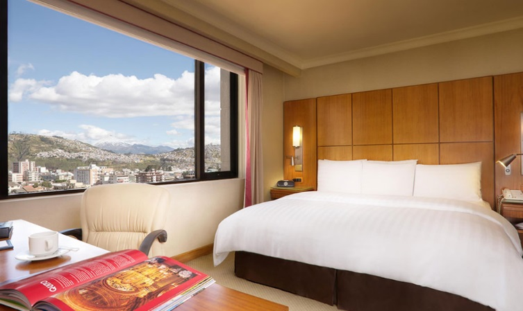
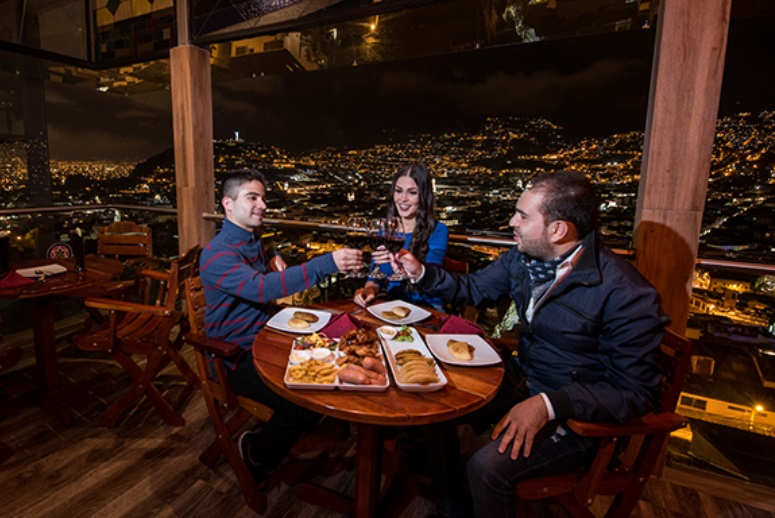

Consejos útiles para viajeros
¿Cuándo visitar?
Quito se encuentra en el centro del país, pero la época más popular para visitarla es durante la estación seca, de junio a septiembre. Las temperaturas son relativamente estables durante todo el año, pero la altitud puede hacer que refresque por la noche, así que hay que llevar ropa de abrigo.
¿Dónde dormir?
Los mejores sitios para tu hospedaje en Quito.
¿Dónde comer?
Los mejores sitios para tu alimentación en Quito.
¿Cómo viajar?
La mejor oferta turística y con la mejor calidad en Quito.
Consulta más información sobre cómo organizar tu viaje en visitquito.ec/organiza-tu-viaje/